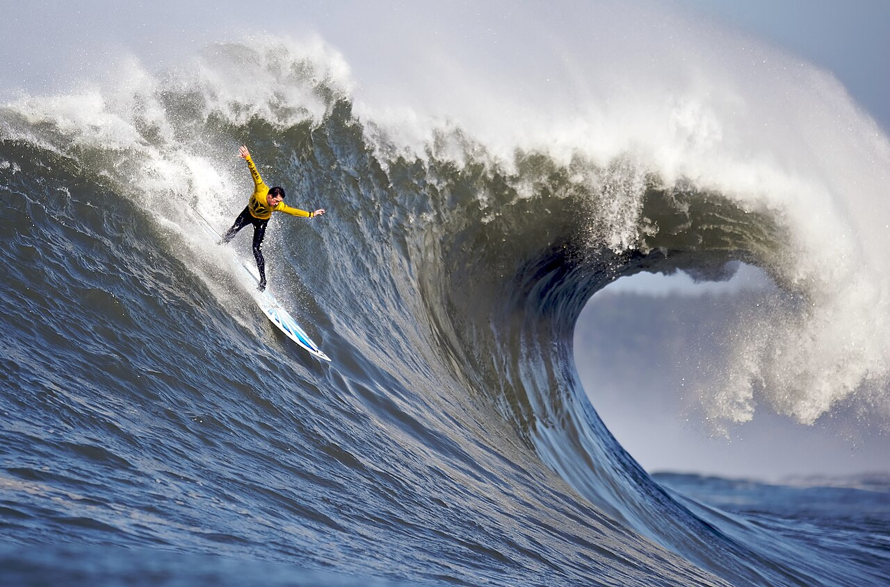

Graphics
Engagement Questions
1. What kind of photos are good to encode using JPEG?
Real life photos are the best photos to used using JPEG.
2. What kind of photos are good to encode using GIF?
Photos that are good to encode using GIF are cartoon and animation.
3. What is unique about the PNG format?
The unique about transparency in PNG format is is useful for creating images with a transparent background.
4. How do you resize your photo to the size it should be displayed?
To resize the photo we can make a class that link to stylesheet css, and then in the css code input the size of it.
5. Why should you resize photos using photo editing software instead of resizing it using CSS?
Because it will be better because it more efficien. It's also making the image load faster because reduce the file size without compromising quality